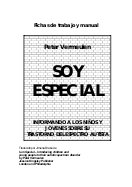

Apoyo a familiares
- Apoyando a los hermanos
-

…En este documento aportamos tres propuestas concretas de actividades que se pueden llevar a cabo con los hermanos y hermanas de personas con discapacidad intelectual.
Cada una de ellas tiene en cuenta la edad de los participantes, y con ello, sus necesidades e implicación en la vida de la persona con discapacidad. Este criterio nos ayuda a la generalización de la propuesta, pero no por ello debemos dejar de tener en cuenta otras variables o características que pueden determinar el tipo de actividad que podemos llevar a cabo.
Es por este motivo que cada una de las actividades aquí descritas debe ser considerada por el lector como una “propuesta abierta”: en este documento aportamos la estructura básica –el esqueleto que la sustenta– a partir de la cual cada profesional (o hermano) interesado en llevarlas a cabo podrá desarrollar y adaptar a su realidad, experiencia y posibilidades…
- Apoyo conductual positivo. Algunas herramientas para afrontar las conductas difíciles
-
…Me llamo Jorge y tengo 34 años, desde los 18 años he estado en contacto con el mundo de la discapacidad. Mis comienzos fueron como voluntario en una asociación que trabajaba en favor de las personas con discapacidad; después pude conocer diferentes servicios en los que también se trabajaba con estas personas. Ahora soy el psicólogo de aquella misma asociación donde hace años empecé.
Entre mis funciones se encuentra la de apoyar a las personas con discapacidad que pertenecen a la asociación con el fin de mejorar su calidad de vida. Teniendo este objetivo claro, lo siguiente es dar a cada usuario los apoyos que necesite para conseguir tan deseado fin.
A lo largo de estos 16 años he vivido muchas y variadas situaciones. Como puede imaginar unas buenas, y otras, no tanto… Unas tareas fueron más duras que otras, sin embargo los logros de las primeras también fueron doblemente gratificantes y no cabe duda de que en todas he aprendido…
- Aprendo a hacer historias sociales
-

…A pesar de las características que identifican a las personas con Síndrome de Asperger, no podemos olvidar que cada uno es diferente. A menudo, las dificultades de unos se convierten en habilidades en los otros; al igual que ocurre con el Síndrome Neurotípico (personas no Asperger).
Con esta ponencia, Aurora expresó de una manera clara, esquematizada y con pictogramas todo lo que ha aprendido en los últimos cinco años con respecto a su hijo y a las historias sociales que ha creado para él, desde que descubrió su verdadero diagnóstico .
Expuso el conocimiento de su experiencia, primero, como alumna de Mª José Navarro, psicóloga especializada en el Síndrome de Asperger y después, por la dedicación que supone, día tras día, adaptar la vida a las necesidades de su hijo. Ese continuo e ininterrumpido trabajo que los padres han de llevar a cabo para colaborar con los profesionales y ayudar a sus hijos a entender cómo funciona la sociedad en la que viven.
- Cómo ayudar a su hijo con la tarea escolar
-
…La tarea escolar representa una oportunidad para que los niños aprendan y para que las familias participen en la educación de sus hijos. Sin embargo, ayudar con la tarea escolar no siempre es fácil. En las reuniones entre padres y maestros y en las conferencias individuales con los padres, los maestros suelen escuchar preguntas como:
- ¿Cómo puedo lograr que Carlos haga su tarea? Todas las noches es la misma lucha para que apague el televisor y se ponga a hacer su tarea.
- ¿Por qué no le asignan más tarea a María?
- ¿Por qué le asignan tanta tarea a Julián?
- ¿A qué horas se supone que Maricela haga la tarea? Ella toma clases de piano, canta en el coro de la iglesia, juega baloncesto y ayuda en los quehaceres de la casa. Casi no tiene tiempo para estudiar.
- ¿Cómo le puedo ayudar a Roberto con su tarea de matemáticas cuando ni yo la entiendo?
- ¿De veras ayuda la tarea a aprender mejor?
Este folleto intenta responder a estas y otras preguntas, las preguntas que los padres y otros miembros de la familia o guardianes de niños en la primaria y la secundaria suelen plantear sobre la tarea escolar. Este folleto también contiene ideas prácticas para ayudar a los niños a completar sus tareas con éxito…
- De Padres a Padres
-

…Este Cuaderno de Buenas Prácticas tiene como fin describir una ACTIVIDAD DE APOYO A FAMILIAS y en esta ocasión se trata de APOYO ENTRE IGUALES. Sin embargo, es preciso destacar que este tipo de apoyo ya se da, de manera espontánea, en muchas asociaciones entre las familias que acaban de "aterrizar" en Holanda y las que ya llevan un tiempo viviendo en ese lugar. Así, el objetivo de este documento no es "crear" este tipo de apoyo, sino sistematizarlo, ofrecer un material, unas pautas y muchas ideas para apoyarlo. Está escrito desde un punto de vista positivo, teniendo en cuenta el potencial con el que cuentan muchas familias que tienen un hijo con discapacidad: la voluntad y el deseo de ayudar a otras familias, de compartir con ellas su experiencia, de escuchar y acompañar. La SOLIDARIDAD es uno de los valores más importantes con que cuenta el movimiento asociativo, se trata de aprovecharlo…
- El día a día de un chico con síndrome de asperger
-
…Este es un manual de instrucciones, una mezcla de historias sociales y pautas de aprendizaje, que preparé para Ian, mi hijo mayor que ahora tiene veintidos años. En él tiene planificado, con pictogramas, lo que ha de hacer, paso a paso, desde que se levanta hasta que se acuesta. Pautas para los fines de semana y algunos aprendizajes nuevos a tener en cuenta.
He introducido cuadros de texto azules donde le explico por qué tiene que hacer las cosas. Con esto pretendo guiarle hacia la comprensión de los actos que debe ejecutar para adaptarse al funcionamiento familiar y social que le rodea y adquirir autonomía.
Los dibujos le proporcionan el apoyo visual que necesita para manejarse en la cotidianidad, de una forma clara y comprensible para él, mientras que, a su vez, hacen el material más ameno y divertido. La lectura continuada y diaria del manual, durante un tiempo, le ha ayudado a interiorizar e integrar deberes y obligaciones en el ámbito del hogar y también del trabajo. Y en ello seguimos…
- El niño pequeño con autismo
-

…Hemos querido preguntarnos cómo comienza el autismo, en qué consiste la alteración afectiva que subyace a ese fenómeno peculiar del desarrollo humano, qué características tienen las capacidades sociales y comunicativas de los niños pequeños con autismo, cómo podemos desarrollar sus competencias comunicativas, qué alteraciones en el desarrollo del sistema nervioso pueden ser responsables del trastorno, cómo educar a los niños pequeños con autismo, qué posibilidades tienen de integrarse en el sistema educativo, cómo atender a problemas que tienen con frecuencia, como son los de alimentación, y cómo se vive el au tismo “desde dentro” de las familias.
Para dar respuesta a estas preguntas, APNA (http://www.apna.es/) organizó los días 23 y 24 de Marzo del año 2000 unas jornadas sobre El niño pequeño con autismo. Se pidió a los ponentes en estas jornadas que elaboraran formalmente sus presentaciones, en forma de artículos. Nos parecía importante que otras personas, que no habían podido acudir a las jornadas, tuvieran acceso a una información que puede ser importante para ayudar a los niños pequeños con autismo y a sus familias…
- Información para padres ante la sospecha de un problema del desarrollo social y comunicativo (http://www.guiasalud.es/egpc/autismo/completa/documentos/anexos/anexo08.pdf)
-
…Es posible que hayan observado algún comportamiento extraño en su hijo. Si éste tiene hermanos mayores han podido comparar que la adquisición de habilidades no está siendo igual que lo fue con sus hermanos, ni hace las mismas cosas que otros niños de su edad. Por ejemplo, es más tranquilo o pasivo que los otros niños, no pronuncia ninguna palabra, apenas balbucea ni utiliza gestos para comunicarse, no responde a su nombre, apenas sonríe o expresa placer cuando intentan compartir actividades con él, parece indiferente a lo que le rodea, etc.
Puede que lo hayan comentado con otras personas (familiares, amigos, profesionales) o simplemente que estuvieran esperando a ver si se solucionaba a medida que el niño o la niña fuera creciendo.
También pudiera ser que no sospecharan la existencia de ningún problema y, en una revisión rutinaria, su pediatra le haya comunicado que parece que algo no va bien en el desarrollo de su hijo…
- Información para padres tras un diagnóstico de Trastorno del Espectro Autista (TEA) (http://www.guiasalud.es/egpc/autismo/completa/documentos/anexos/anexo09.pdf)
-
… A pesar del lógico sentimiento de alivio que se produce al obtener una explicación sobre lo que le ocurre a su hijo y saber, por fin, que sus preocupaciones tenían fundamento y no eran producto de su imaginación, la aceptación del diagnóstico recibido requerirá tiempo y supondrá un proceso lleno de altibajos. Es completamente normal que el enfrentamiento ante la realidad de un hijo que va a tener un desarrollo y unas necesidades diferentes a las esperadas en comparación con los otros niños de su edad, ocasione un conflicto con las expectativas establecidas sobre él y arroje una gran preocupación sobre su futuro.
En este proceso pueden aparecer diferentes emociones, desde la negación inicial, pasando por sentimientos de ira, resentimiento y depresión, hasta la aceptación del mismo. Según las familias que ya tienen un hijo con este trastorno, los primeros momentos tras recibir el diagnóstico son los más difíciles, pero con el tiempo y los apoyos adecuados la mayoría de los padres se van sintiendo mejor. La aceptación de su hijo tal y como es, con sus características propias, sus puntos fuertes y sus puntos débiles, al igual que todos los niños, ayudará a que le proporcione los apoyos para desarrollar sus capacidades y superar las posibles dificultades que pueda tener. También contribuirá a ello que el resto de los familiares y amigos aprendan a conocerle y a aceptarle tal y como es. La sensación de control sobre la situación aumenta la seguridad y la capacidad de afrontamiento de los padres, por ello, la información sobre el diagnóstico y la manera en la que puede influir en la vida de su hijo es de extrema utilidad…
- Los hermanos opinan…
-

…Lo que han intentado realizar estos grupos de apoyo es llegar a una descripción general de lo que sienten los hermanos de una persona con discapacidad intelectual en el transcurso de su vida, diferenciándola en tres etapas: infancia, adolescencia y vida adulta, a partir de su experiencia personal. Es importante, por tanto, tener en cuenta que lo que se refleja en este documento no tiene que ser necesariamente compartido por todas las personas que han participado en su elaboración. Se trata, simplemente, de una recopilación de todas las ideas generales que han surgido en las discusiones.
El objetivo de este trabajo ha sido recoger en un documento las reflexiones de los hermanos para que puedan ser de utilidad a los padres de personas con discapacidad intelectual que estén preocupados por la educación y el desarrollo de los otros hijos. Nuestro deseo principal es que sea un documento útil…
- Manual para los Primeros 100 Días. Un manual para ayudar a las familias a obtener la información crítica que necesitan durante los primeros 100 días luego de un diagnóstico de autismo
-
…Su hijo fue diagnosticado con autismo y usted ha pedido ayuda. Éste es un momento decisivo en un largo camino. Para algunas familias, puede ser el punto en el que, luego de una larga búsqueda por respuestas, ahora tienen un nombre para algo que no sabían cómo llamar, pero que sabían que existía. Quizás usted sospechaba que se trataba de autismo, pero tenía la esperanza de que una evaluación demostrara lo contrario.
Muchas familias reportan sentimientos mezclados de tristeza y alivio cuando reciben el diagnóstico del niño. Puede que se sienta completamente abrumado. También es posible que se sienta aliviado al saber que la preocupación que ha tenido respecto a su hijo es válida. Sienta lo que sienta, sepa que miles de padres comparten este camino. Usted no está solo. Hay motivos para tener esperanza; tiene ayuda disponible.
Ya que tiene el diagnóstico, la pregunta es: ¿Qué debe hacer ahora?
Este folleto, el Manual de los 100 Días de Autism Speaks (http://www.autismspeaks.org/), fue creado para ayudarlo a hacer el mejor uso posible de los próximos cien días en la vida de su hijo. Contiene información y consejos de respetados y reconocidos expertos en autismo, y de padres como usted…
- Manual para padres de niños autistas
-
… Este manual tiene la única intención de guiar a padres de niños cuyo diagnóstico es autismo. No debe ser utilizado como guía para el desarrollo del niño. Las técnicas aquí expuestas no están actualizadas completamente aunque la variación es poca.
Los profesionales del área y los docentes podrán acceder a este manual como una ayuda extra para guiar a los padres pero en ningún caso deberán basarse en él. Es obligación ética del profesional que lea este manual, documentarse y tomar diplomados certificados.
En este manual nos centraremos principalmente en la técnica de la Modificación de la Conducta (conductismo) por ser ésta la que mayor aceptación ha tenido por parte de padres y profesionales del área y porque no está peleada, además, con ningún otro tipo de terapia.
Este manual es realmente una recopilación sobre la literatura del tema. Mi único propósito es presentar la experiencia de ser padre de un niño autista y mis estudios profesionales nada tienen que ver con el tema (soy Licenciado en Sistemas), tan solo comparto con ustedes lo que he leído…
- ¿Mucho, poquito o nada?
-

…La guía ¿Mucho, poquito o nada? sobre pautas de crianza está dirigida a padres, madres y cuidadores de niños y niñas de 0 a 5 años de edad. Su objetivo es brindar consejos y herramientas respecto a la crianza de los niños con el fin de generar las condiciones para que tengan un desarrollo saludable y fortalecerlos emocionalmente.
El material está dividido en tres partes, cada una de las cuales se corresponde con los contenidos específicos de las etapas del desarrollo infantil: 0-12 meses, 1 a 3 años y 3 a 5 años. Los temas abordados refieren a los cambios en las familias con la llegada de un niño, la importancia del apego y la comunicación, los estímulos, la puesta de límites, la incorporación de hábitos, la sexualidad y los aprendizajes de los niños en cada una de las etapas mencionadas. También hace hincapié en la necesidad de propiciar un entorno adecuado para la crianza de niños y niñas, atendiendo a situaciones y conflictos que puedan darse en las relaciones entre los adultos…
- No estás solo. Un documento elaborado por padres y madres y dirigido a aquellas familias con hijos con trastornos en el desarrollo
-
…Desde el año 1994 FEAPS está desarrollando a nivel estatal un Programa de apoyo y respiro familiar, en el que han participado más de 25.000 familias. El servicio de padre a padre ofrece apoyo a los padres que acaban de conocer la discapacidad de su hijo, con el fin de recibir apoyo en los primeros momentos de desorientación y shock, a través del contacto con otros padres acogedores, que también tienen un hijo con discapacidad intelectual y han pasado por la misma situación. Pueden, por tanto, transmitirles su experiencia, compartir y comprender sus inquietudes y sentimientos, y acompañarles en esos difíciles primeros momentos. Sin embargo y a pesar de llevar tantos años trabajando en este tipo de servicio, hasta ahora había muy pocos documentos escritos sobre el tema y menos aún elaborados por las propias familias.
La Federación catalana APPS se propuso llenar un vacío con este documento ya que, cuando reciben la noticia, los padres cuentan con información a nivel médico e incluso asistencial, pero carecen de apoyo emocional, se sienten solos, se preguntan por qué les ha pasado a ellos y cómo afrontarán la nueva realidad.
Dada la buena acogida que ha tenido esta publicación entre las familias y asociaciones del movimiento asociativo FEAPS, la Confederación ha promovido una nueva edición financiada por Caja Madrid. Enmarcada en el Plan de orientación y difusión sobre desarrollo infantil en Atención Temprana que ha patrocinado esta entidad, contribuirá a la distribución del documento entre sus entidades y otras instituciones que trabajan con familias de personas con discapacidad…
- Soy diferente, pero igual que tú
-

… Este cuento tiene como principal objetivo ayudar a todos los niños normales a entender a los niños con TGD Muchas veces se producen situaciones dentro de los centros educativos o en el tiempo de ocio en las cuales los niños no saben el porqué actúa así el niño con TGD Juan nos describe muchas de estas situaciones. También para dar a conocer a nuestra sociedad este tipo de trastornos tan desconocidos. …
- Soy especial. Informando a los niños y jóvenes sobre su trastorno del espectro autista
-

…Durante años, hemos explicado el fenómeno del autismo a padres y profesionales en los distintos servicios sociales, de salud y educativos. Especialmente en los últimos años, ha habido un considerable progreso en el diagnóstico de los trastornos del espectro autista en personas de inteligencia promedio. Estas personas con autismo han comenzado por sí mismas a preguntar de modo directo o indirecto acerca del fenómeno. Esta reciente evolución ha creado un nuevo desafío para los padres y los profesionales: ¿Cómo explicarles a ellos el autismo?
En 1997, cuando estaba escribiendo Het Geslosten Boek. Over Autisme en Emoties (El libro cerrado. Sobre autismo y emociones), decidí tomar este desafío. Dediqué un capítulo entero al tema. El tratamiento que le di fue de gran interés. Tanto padres como profesionales se acercaron con cantidad de preguntas, y consultaban especialmente sobre materiales concretos o manuales. Había descripto los contornos generales y tratado los principales puntos de interés, pero aún era necesario trabajarlos en detalle y darles una forma práctica.
Pero no fueron sólo padres y profesionales los que se acercaron a mí con preguntas. Durante nuestros cursos de habilidades sociales para adolescentes con autismo, los mismos participantes comenzaron a preguntar acerca de su discapacidad y sus problemas. Un número de sesiones sobre intimidación y crítica, y especialmente las sesiones sobre cómo relacionarse, los llevaron a aproximarse al tema del autismo…
- Soy un niño con Trastorno Generalizado del Desarrollo y me gustaría que conocieras un poco más mi forma de ser y aprender
-
Presentación esquemática de características de los TGD y de estrategias para la integración de los niños que los padecen elaborada por la organización BATA (http://www.autismobata.com/).
- Un niño con autismo en la familia. Guía básica para familias que han recibido un diagnóstico de autismo para su hijo o hija
-
…En estos momentos, sabemos que tenéis muchas preguntas que queréis resolver, esperamos que encontréis algunas respuestas en esta guía y os llenéis de esperanza y ganas de trabajar con vuestro hijo. Queremos ayudaros: recordad que no estáis solos.
Esta guía ha sido escrita para vosotros, padre y madre, por lo que os daréis cuenta que nos referimos a vosotros en plural porque sabemos que sois dos personas con inquietudes, preocupaciones, dudas e intereses. Considerad que cuando hablamos de
padre(s)
, a lo largo de esta guía, nos estamos refiriendo a padre y madre en conjunto o a uno de vosotros en caso de que no tengáis pareja.Lo que vais a encontrar a continuación son muchas de las inquietudes que otros padres de hijos con trastornos del espectro autista nos han trasmitido, desde el momento en que reciben el diagnóstico hasta los 6 años. Esta es la etapa en la que se centra esta guía. Puede que vuestras propias preguntas no estén incluidas. No os preocupéis, os recomendaremos dónde podéis buscar las respuestas que necesitáis…
- Un viaje por la vida a través del autismo: Guía de los padres para la investigación
-
… Desde el momento en que a su hijo se le diagnostica con autismo, usted necesita obtener información confiable sobre este complejo trastorno. Muchos padres enfrentan una desalentadora “curva de aprendizaje” cuando se sumergen en este nuevo mundo de información compuesto de terminología médica y científica. Descubrimos rápidamente que no existe una sola fuente o centro nacional para la información sobre el autismo. Puede parecer injusto, pero a nosotros, los padres, recae la tarea de educarnos. Entiendo personalmente lo difícil que puede ser el periodo inmediatamente después del diagnóstico inicial, cuando buscan respuestas a sus preguntas. Tengo un hijo y una hija con autismo, ambos están ahora en la adolescencia.
Cuando fundamos OAR (http://www.researchautism.org/) el diciembre pasado, uno de los objetivos principales fue suministrar información y herramientas prácticas para aliviar la carga a los responsables en primera línea, como son los padres y las madres, los hermanos y las hermanas, los abuelos, los profesores, los asistentes escolares y otras personas que enfrentan los retos diarios que presenta el autismo. Esta publicación, Un viaje por la vida a través del autismo: guía de los padres para la investigación, es la primera adición de la OAR (http://www.researchautism.org/) a este paquete informativo. La guía está orientada a responder a las necesidades de los padres de niños recién diagnosticados con autismo. Espero que esta sea una guía útil para usted y su hijo en el inicio de su propio viaje…
Publicaciones presentadas en esta página
- Apoyando a los hermanos
- Apoyo conductual positivo. Algunas herramientas para afrontar las conductas difíciles
- Aprendo a hacer historias sociales
- Cómo ayudar a su hijo con la tarea escolar
- De Padres a Padres
- El día a día de un chico con síndrome de asperger
- El niño pequeño con autismo
- Información para padres ante la sospecha de un problema del desarrollo social y comunicativo
- Información para padres tras un diagnóstico de Trastorno del Espectro Autista (TEA)
- Los hermanos opinan…
- Manual para los Primeros 100 Días. Un manual para ayudar a las familias a obtener la información crítica que necesitan durante los primeros 100 días luego de un diagnóstico de autismo
- Manual para padres de niños autistas
- ¿Mucho, poquito o nada?
- No estás solo. Un documento elaborado por padres y madres y dirigido a aquellas familias con hijos con trastornos en el desarrollo
- Soy diferente, pero igual que tú
- Soy especial. Informando a los niños y jóvenes sobre su trastorno del espectro autista
- Soy un niño con Trastorno Generalizado del Desarrollo y me gustaría que conocieras un poco más mi forma de ser y aprender
- Un niño con autismo en la familia. Guía básica para familias que han recibido un diagnóstico de autismo para su hijo o hija
- Un viaje por la vida a través del autismo: Guía de los padres para la investigación
La edición y mantenimiento de EspectroAutista.Info se ha descontinuado. Para conocer todos los detalles lea la última noticia.